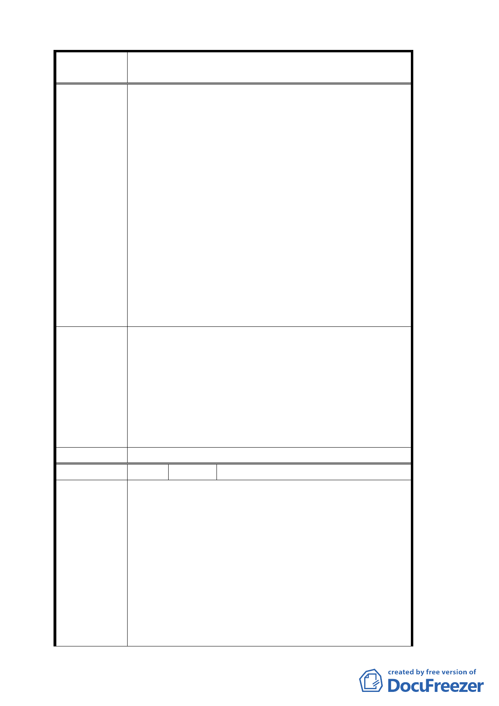

案 名 變更臺北市文山區指南里、老泉里部分保護區為休閒
產業特定專用區都市計畫案
聯外道路具有發展休閒步道及景觀之價值，請貴
單位確實深入了解開發價值及符合步道系統開發
之美意。
二、關於本案第肆、上位及相關計畫中之二，貓空地
區邊相關都市規畫案中，老泉里農業規劃案：規
劃為休閒商業區之條款中提及提供優質休閒居住
環境、文化教育與公共設施，對於本條款之建議：
（一）休閒居住環境及自然文化教育的推展勢必具備
相當之腹地與景觀，若有案主與本人之土地具有
同性質之景觀價值及足夠之腹地，殊不該因僅僅
短距離之私設道路而被排除於計畫案之外。
（二）對於有意願配合政府單位推動茶藝文化及地方
文史保存工作者，在開發之空間中樂意接受輔導
並保留相對文史空間之民眾，是否也有相應之特
例及鼓勵，以達地方上文化提升及強化地區便
民，利民之共同目標。
1. 陳情地點未鄰接產業道，考量救災避難需要，歉難
採納。
2. 有關發展茶文化方面除依土地使用構想訂立形塑品
專 案小組 審 茗及茶藝文化為主之使用內容，並輔以因應休閒產
查 結 論 業允許所衍生之飲食及餐飲活動需求。
3. 另配合現有茶展中心未來變更為「休閒產業設施服
務用地」，於該用地內要求設置 30%以上作為文化設
施使用，作為帶動發展貓空地區茶文化的重要地點。
委 員會決 議 同專案小組審查結論。
編 號 １４ 陳情人 張萬福君等十二人
一、本區原屬保護區，土地之利用多以農業使用為主，
當地住民多具有農民之身份，建議本案應考量兼具
地方特色、農業發展及農民之權利。
二、變更為休閒產業特定專用區後，經營者必需改善目
前相關建物之外觀，設施以符合法令規範，其改善
陳 情 理 由 之內容、規模應確實告知。
三、關於二年期間之改善後緩衝期是否適當。
四、區內坡度三○度以上不可建築之農地稅賦問題。
五、建請市府考量於計畫區內同時採行「區段徵收」，
以利全區整體發展之規劃，提高民眾配合意願、並
為廣大市民、遊憩民眾創造符合國際水準之綠色休
一一